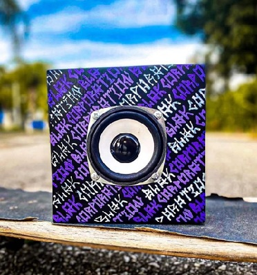

- Home
- >
- Portifolio
- >
- Caixa de Som
BlackBox
Descrição do Projeto
Durante o terceiro ano do Ensino Médio Técnico no CTIG – UNESP, nossa turma desenvolveu esta caixa de som como parte do projeto final da disciplina de Montagem Eletrônica. O desafio era unir criatividade, design e conhecimentos técnicos em um produto funcional.
A construção envolveu todos os alunos: desde a montagem da estrutura e do sistema de amplificação até a organização da fiação interna e o acabamento externo. A personalização — com cores e padrões marcantes — surgiu das ideias coletivas da turma, tornando o projeto único e cheio de identidade.
Esse trabalho representou a síntese de tudo o que aprendemos ao longo do curso e simbolizou a parceria, o esforço e a dedicação conjunta da nossa turma na criação de algo real e significativo.
←Voltar ao portifólio